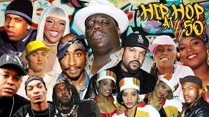

lests read about the styles ...
HipHop
Hip hop or hip-hop, also known as rap and formerly as disco rap, is a genre of popular music that originated in the early 1970s from the African American community. Hip-hop music originated as an anti-drug and anti-violence genre consisting of stylized rhythmic music (usually built around drum beats) that often accompanies rapping, a rhythmic delivery of poetic speech. In the early 1990s, a professor of African American studies at Temple University said, "Hip-hop is something that blacks can unequivocally claim as their own." By the 21st century, the field of rappers had diversified by both race and gender. The music developed as part of the broader hip-hop culture, a subculture defined by four key stylistic elements: MCing/rapping, DJing/scratching with turntables, breakdancing, and graffiti art. While often used to refer solely to rapping and rap music, "hip hop" more properly denotes the practice of the entire subculture. The term hip hop music is sometimes used synonymously with the term rap music, though rapping is not a required component of hip hop music; the genre may also incorporate other elements of the culture, including DJing, turntablism, scratching, beatboxing, and instrumental tracks.
Hip hop as both a musical genre and a culture was formed during the 1970s, when block parties became increasingly popular in New York City, particularly among African American youth residing in the Bronx. At block parties, DJs played percussive breaks of popular songs using two turntables and a DJ mixer to be able to play breaks from two copies of the same record, alternating from one to the other and extending the "break". Hip-hop's early evolution occurred as sampling technology and drum machines became widely available and affordable. Turntablist techniques such as scratching and beatmatching developed along with the breaks. Rapping developed as a vocal style in which the artist speaks or chants along rhythmically with an instrumental or synthesized beat.
for more...